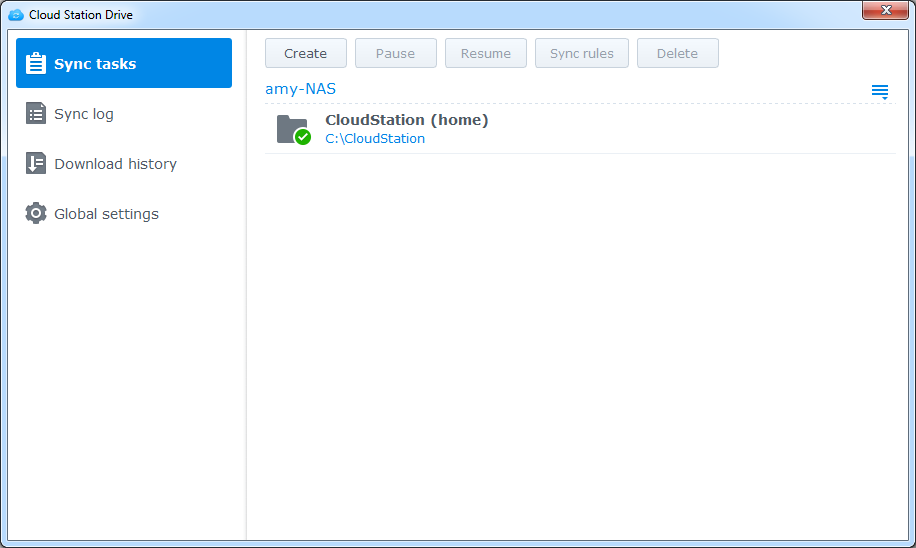

Genel Bakış
Synology NAS'a yönelik Cloud Station, Synology NAS sunucunuzdaki dosyaları bilgisayarlar veya mobil cihazlar gibi diğer cihazlarla kolayca senkronize etmenizi sağlayan bir dosya senkronize etme uygulamasıdır (DS cloud ile). Bilgisayarınızda saklanan dosyaları otomatik olarak Synology NAS'a senkronize etmek için Synology NAS'ınıza Cloud Station Server ve bilgisayarınıza Cloud Station Drive kurun.
Synology NAS ve bilgisayarınız arasında bağlantı kurulması
- Paket Merkezi'ne gidin, Cloud Station Server'i bulun ve ardından Kur'a tıklayın.
- Cloud Station Server'ı başlatın.
- Genel Bakış sekmesinde, düğmesine Cloud Station Drive altında tıklayarak işletim sisteminiz için Cloud Station Drive'ı indirin. (Cloud Station'ı Synology İndirme Merkezi'nden de indirebilirsiniz.)
- Kurulum programını bilgisayarınızda başlatın ve ekrandaki talimatları izleyin.
- Yüklemeden sonra Cloud Station'ı bilgisayarınızda çalıştırın. Şimdi Başlat'a tıklayın.
- Cloud Station çalıştıran Synology NAS'ın adresini (veya QuickConnect ID'sini), kullanıcı adını ve parolayı girin. LAN dahilindeki IP'leri aramak için sağdaki arama simgesine tıklayabilirsiniz. İleri'ye tıklayın.
- Düzenle simgelerine tıklayarak Synology NAS'ınızda ve bilgisayarınızda senkronize edilmesini istediğiniz klasörleri seçin. Ardından senkronizasyon ayarlarını yapılandırmak için Gelişmiş'e tıklayabilirsiniz.
- Senkronize edilmesini istemediğiniz klasörlerdeki işaretleri kaldırın.
- Senkronize edilmemeleri için bir azami dosya boyutu veya kara liste dosya adları veya dosya türlerini belirleyin.
- Çift yönlü senkronize edip etmeyeceğinizi ya da sadece Synology NAS'ınızdan verileri indirip indirmeyeceğiinizi seçin.
- Bitti'ye tıklayarak kurulumu tamamlayın.
- Sistem tepsisinde Cloud Station simgesini bulabilirsiniz.
- Tepsi menüsünü açmak için sistem tepsisi simgesine tıklayın. Burada dosyalarınızın ilerlemesini ve durumunu görüntüleyebilirsiniz. Burada dosyalarınızın ilerlemesini ve durumunu görüntüleyebilirsiniz. Cloud Station'u başlatmak için Ana uygulama'ya tıklayın.
- Başlatma sonrasında, Cloud Station'u nasıl kullanacağınıza dair bazı ipuçları gösterilecektir. Daha fazla ipucu görmek için sağ ok üzerine tıklayın veya daha fazla bilgi için Çevrimiçi eğitimler öğesine tıklayın. İpuçlarına ihtiyacınız yoksa, Bunu tekrar gösterme yanındaki kutuyu işaretleyin.
- Şimdi Cloud Station Drive'daki senkronizasyon görevlerinizi yönetebilirsiniz. 


Senkronize edilmiş bir dosyanın önceki bir sürümünü indirme
- Sistem tepsinizdeki Cloud Station Drive simgesine tıklayın ve klasör simgesine tıklayın.
- Seçtiğiniz dosyaya sağ tıklayın ve ardından Synology Cloud Station > Önceki sürümlere gözat seçimini yapın.
- İndirmek istediğiniz sürümü bulup indirme simgesine tıklayın.


Senkronizasyonlu bir dosyanın önceki bir sürümünü Cloud Station Server'dan indirme veya geri yükleme
- Cloud Station Server > Sürüm Geçmişi'ne gidin ve geri yüklemek istediğiniz dosya veya klasörü bulun.
- Geri almak istediğiniz dosyayı seçerek Eylem > Önceki sürümlere gözat öğesine tıklayın.
- İndirmek istediğiniz dosyanın sürümünü seçerek İndir'e tıklayın. Ya da seçili sürümün geri yüklenmesini istediğinizden eminseniz Geri Yükle'ye tıklayın, geçerli sürümünüzün üzerine yazılır.


Önemli notlar
- Bir dosyanın kazayla silinmesi veya üzerine yazılması durumuna karşın eski sürümleri her zaman saklayın.
- Genel Ayarlar bölümünde, bir dosyayı bilgisayarınızdan sildiğinizde o dosyanın NAS'ınızdan tekrar getirilmesini ya da NAS'ınızdan silinmesini ayarlayabilirsiniz.
Verilerinizi Mobil Cihazlarınıza Senkronize Edin
DS cloud, Apple App Store'da ve Google Play Store'da ücretsiz olarak mevcuttur. Ayrıca doğrudan indirmek için aşağıdaki QR kodunu tarayabilirsiniz.